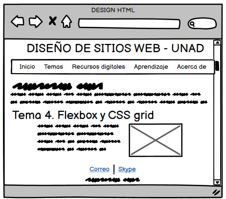

Propósito del sitio
El propoósito del sitio es aprender sobre como crear contenido para la web, utilizando para ello el lenguaje de marcado HTML. El tema tratado por el estudiantes será el Flex Box y el grid layout, temas importantes para lograr una maquetación impactante y premita generar contenido agradable visualmente.
Tema 4. Flexbox, CSS grid

El módulo de caja flexible (flexbox), fue diseñado como un modelo unidimensional de layout, para ayudar a distribuir mejor el espacio de los items de una interfaz y mejorar la alineación.
Cuando se dice que flexbox es un modelo unidimensional se refiere a que maneja el layout en una sola dimensión. Puede ser verticalmente (Columna) o Horizontalmente (Fila).
Flexbox cuenta con dos ejes, el eje principal y el eje cruzado. El eje principal está definido por la propiedad flex-direction, el eje cruzado es el ejer perpendicula al eje principal.
El eje principal puede tener cuatro posibles valores
- row
- row-reverse
- column
- column-reverse

Bibliografía
MDN Web Docs, 2021. Conceptos básicos de flexbox. Recuperado el 1 de marzo de 2021 de https://developer.mozilla.org/es/docs/Web/CSS/CSS_Flexible_Box_Layout/Basic_Concepts_of_Flexbox